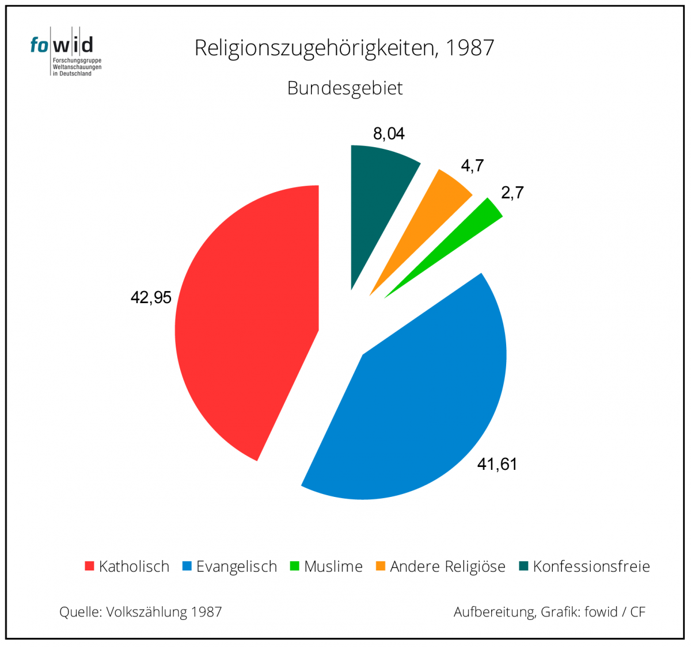
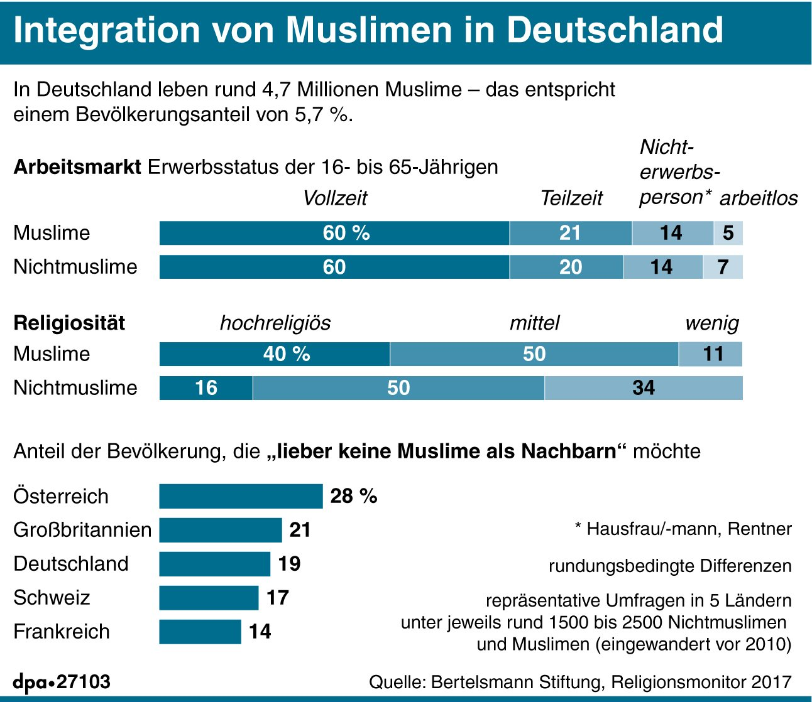
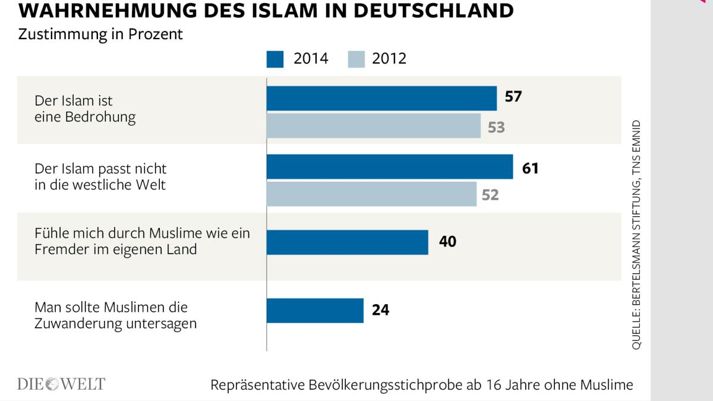
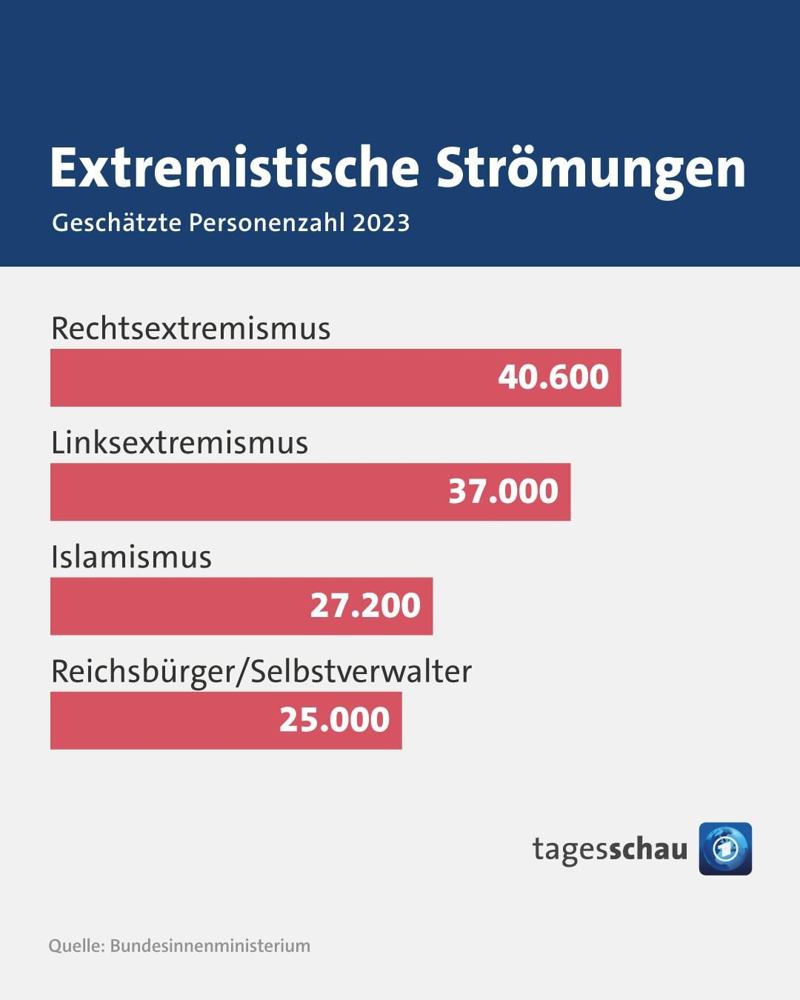

In Deutschland leben etwa 5,5 Millionen Muslime, was ca. 6,6 % der Gesamtbevölkerung entspricht (Stand 2023, BAMF).
Laut einer Allensbach-Umfrage aus 2023 fühlen sich 68 % der Muslime in Deutschland gut integriert.
Jedoch sehen 56 % der deutschen Bevölkerung den Islam laut einer Umfrage des Pew Research Centers als „nicht kompatibel mit westlichen Werten“.
Laut Verfassungsschutzbericht 2022 gibt es in Deutschland etwa 28.000 Islamisten, von denen etwa 2.000 als gewaltbereit eingestuft werden.
